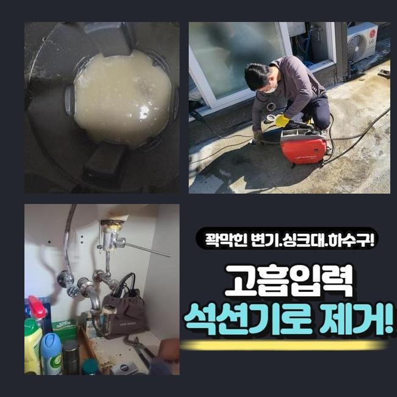
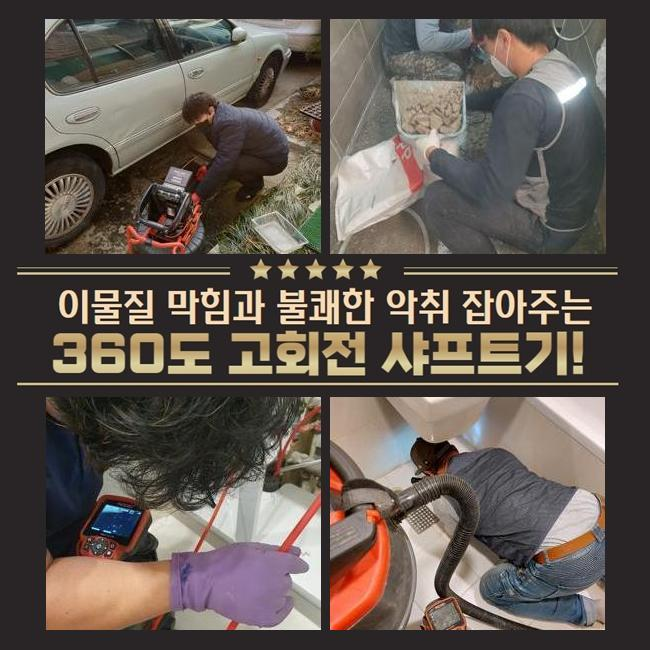
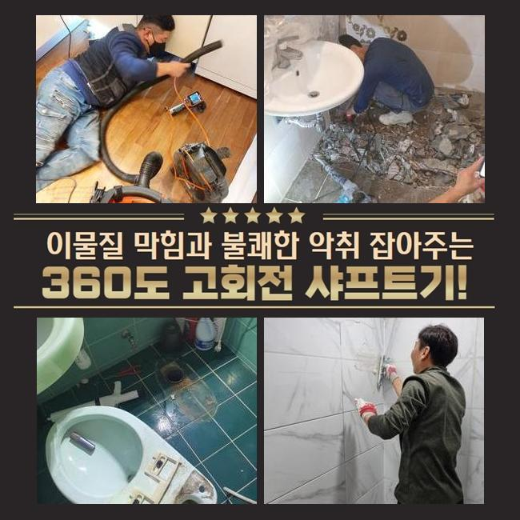
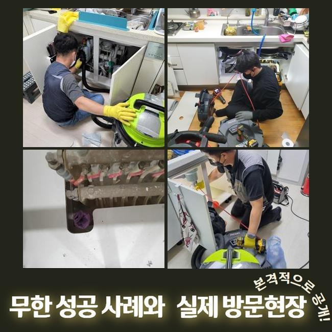
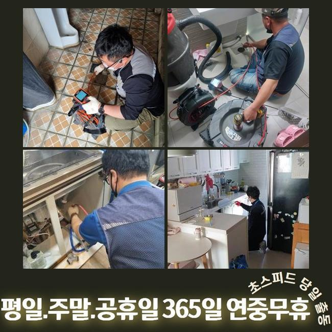

🏠 연성동싱크대배수관막힘 미산동 맨홀막힘 통수전문
용인 싱크대막힘 전문 시공 후기

📋 작업 개요
- 위치: 용인
- 서비스 유형: 싱크대막힘, 하수구막힘, 배관막힘, 맨홀막힘, 역류해결, 배관청소
- 작업 일시: 2024. 12. 29. 12:31
- 업체명: 하수구수사대 (010-5615-2118)
🔍 문제 상황
연성동싱크대배수관막힘 미산동 맨홀막힘 통수전문
며칠전 막히는 문제때문에 불편을 겪으셨던 고객님에게 전화가 들어왔었는데요
고객분은 관로와 관련한 전문인은 아니셨지만 나름의 대처법을 가진 상태였는데요
고객분은 하수관을 청소하고 막힌 스팟을 찾아보려 관찰했지만 어느지점이 시발점인것인지 인지하지 못해 저희업체께 의뢰했던 것이였습니다
계신 곳에 도착하니 지속적인 시도로 지치셨던것이 한눈에 들어왔는데요
일반인 입장에서는 명확한 이유에 대해 찾을 수 없는 사례들이 상당수에요
내방해 하수도를 진단하니 주의해야할 증세는 없었습니다
고객분은 공동배수관 등에서 원인들이 자리했을 확률들이 높을거라 판단하였습니다
외측에 나무등이 자리하고 있다면 뿌리등이 배수관으로 말려 들어가거나 잔해물이 흐를 확률이 있어요
많은 이유로 바깥쪽의 관로들이 막혀버렸을 수 있는데요

🔎 원인 분석
💡 전문가 진단: 정밀 진단 장비를 사용하여 슬러지의 고착 여부를 판명하고 타격/세척 작업을 실시했습니다.
고객님에게 현상태의 예상되는 이유들을 안내하고 밖의 배관실황을 진단해봐야할 것을 안내했어요
의뢰인분도 이러한 내용을 들으시고 외측하수구의 점검과정에 동의했습니다
시정을 착수하기 이전에 장비점검도 해주었죠
배수결함의 이유들은 특정이 안돼요
바깥부분에 배수길이 노출되어있을땐 낙엽등 근처로부터 유입된 이물이 하수도로 누적되기 시작해요
더군다나 비소식이 있을때 외측의 관로등의 실태를 소홀히 하면 문제들은 갑자기 생길거에요
또한, 나무의 땅 밑으로 침투해버리는 사례도 흔하게 발생해요
배수관을 감싼다거나 더불어 균열을 생성하는 문제로도 야기시켜요
이러한 결함 발생 시 유수가 정체되어 막혀버리는 사태가 벌어집니다
이말고도 노후이슈가 있다거나 손상된 상태에서도 배수가 이뤄질 수가 없어서 막힐 수 있어요

🔧 작업 과정
시간들이 흐르며 하수관이 노후된다면 잔해물이 누적되는 환경들이 만들어집니다
끝으로 대다수 통수오류의 까닭들은 적재적소의 청소들을 안하기 때문이에요
때때로 등한시한다면, 작은 여러 폐기물들이 쌓이면서 막혀버리게 되는 상황들이 심해질거에요
그러므로 외부라인을 때때로 점검하고 청소시키는게 앞서서 조치하는 괄목할만한 방법들이라 할 수 있겠습니다
여러가지의 기조들을 이해한 후 미리 대비해주는게 1순위에요
내시경기기로 바깥쪽 하수시스템들의 상황들을 확인했어요
내시경으로 살피니 하수구의 군데군데마다 잔재들과 기름으로 인하여 엉망이 된 것이 관찰되었습니다
이와같이 배수관이 막히면 물의 유수가 이뤄질 수가 없어서 역류문제들도 나타나기에 대처를 고려하는게 중요하겠습니다
진단을 거쳐 잔재들이 모인 곳을 목표로 해서 청소키로 결정해주었습니다
고압청소까지 사용해 오염된 관로를 구석구석 청소해주었어요
덩어리졌던 슬러지를 안에서부터 청소하였더니 막힌상태의 유수도 배출되었는데요
입구쪽에서부터 고여있던 오수들이 흘러나왔고 이물이 빠지면서 조금씩 원활히 컨디션을 회복했는데요
물이 신속히 출수되는 현상을 확인하며 의뢰자께서도 해당 과정들을 관찰하셨어요
이물제거가 완료되고 고객과도 얘기하며 이물이 축적되는 원인에 대해서도 안내하니 의뢰인분도 궁금하셨던 내용을 물으셨습니다
이로인해 고객분의 경우 관리측면의 비중을 인지하게되었고 나중에까지 주기적인 점검들의 불가피함을 인지하셨어요
오차없이 작업들이 종료된 후 하수관로가 완전히 복구되며 고객의 경우 통수되는 오수들을 보게되었습니다


✅ 작업 완료
고객께도 결과들에 대해 안내하고 지속적으로의 관리방법들까지 설명했죠
정기성을 갖추고 밖의 배관실태를 점검해본다던가 상황마다 전문가들의 대책을 염두에 두는게 최선이라고 설명드렸죠
이것으로 고객님에게서 불편을 잠재울 수 있어 다행스러웠네요
여러분의 문제없는 배수상황에 답답함이 없도록 시간에 상관없이 저희의 전문가들에게 연락주세요



⚠️ 주방 싱크대 배관 막힘 예방 수칙
- ✅ 기름기가 묻은 식기나 프라이팬은 설거지 전 키친타올로 반드시 기름때를 닦아내세요.
- ✅ 주기적으로 싱크대 개수대에 뜨거운 물을 가득 받아 한 번에 내려 배관 내부 기름을 씻어내세요.
- ✅ 배수구 거름망을 미세한 필터로 사용하시고 음식물 찌꺼기가 틈으로 새어 들지 않게 관리하세요.
- ✅ 베이킹소다와 식초를 뜨거운 물과 함께 일주일에 한 번씩 부어주면 배관 살균과 막힘 예방에 좋습니다.
💡 핵심 정리
- 확실한 장비 작업(내시경 점검 및 샤프트 스케일링)으로 원인을 뿌리 뽑습니다.
- 작업 후 1년 이내에 동일한 부위 재발 시 100% 무상 A/S 서비스를 보장합니다.
- 서울 · 경기 · 인천 전 지역에 24시간 언제든 긴급 출동할 수 있도록 항시 대기 중입니다.
❓ 자주 묻는 질문 (FAQ)
🚨 용인 싱크대막힘 문제로 고민이신가요?
정확한 원인 진단과 확실한 시공으로 재발 없는 해결을 약속드립니다.
24시간 긴급 출동 | 서울 · 경기 · 인천 전지역 | 1년 내 재발 시 무상 A/S